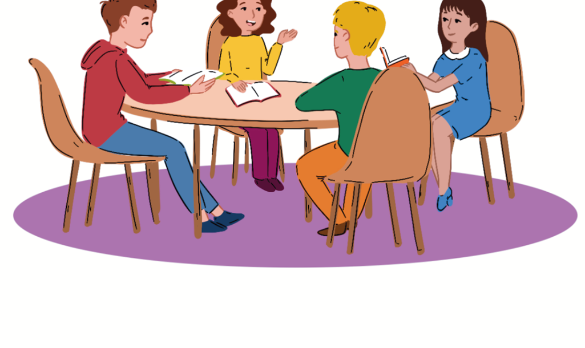
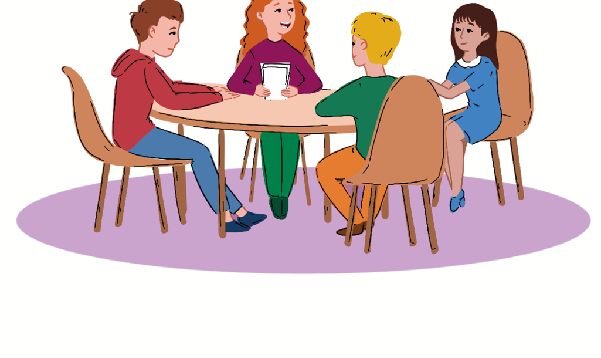

Mendime të ndryshme, vendime të përbashkëta
Veprimtaria 4: “Si të marr vendimin e duhur?”
Shikoni me kujdes fotografitë e mëposhtme. Lexoni fjalitë e dhëna.

Të diskutosh do të thotë që të shprehësh mendimin tënd, krahas mendimit të tjetrit.

Kur jep mendimin tënd, është mirë të shpjegosh arsyen pse mendon ashtu duke dhënë shembuj ose fakte që e mbështesin mendimin tënd.
Dëgjo me kujdes edhe të tjerët kur flasin!